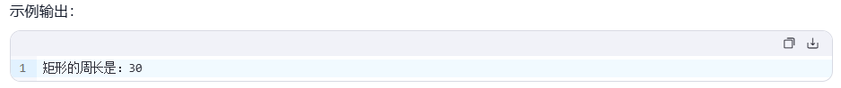
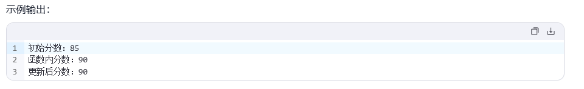
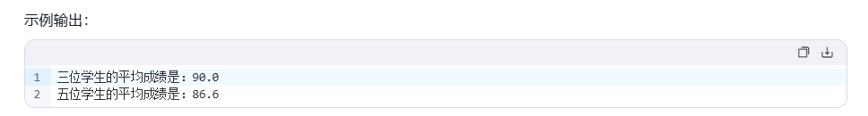

函数专项：五个核心需求覆盖「打印 vs 返回值、元组拆包、全局变量、不定长参数」，三道拓展题配有期望输出截图。函数是后面所有项目的地基，这一套值得多刷两遍。
一、核心需求
1. 计算器函数（直接打印版）
定义一个函数 computer（计算器函数），传入 2 个参数，在函数内部完成加、减、乘、除计算，并直接打印四个结果。
def computer(a, b): print(f"加: {a + b}") print(f"减: {a - b}") print(f"乘: {a * b}") print(f"除: {a / b}") computer(10, 5) # 加: 15 # 减: 5 # 乘: 50 # 除: 2.0
解析：这一版函数只负责"算完就打印"，没有返回值（默认返回 None），适合只关心显示结果的场景。
2. 计算器函数（元组返回版）
同样是 computer 计算器函数，但要求把加减乘除结果通过元组的方式返回；调用时用四个变量直接接收每一个值——体验元组的自动拆包。
def computer(a, b): return a + b, a - b, a * b, a / b # 自动打包成元组返回 # 元组自动拆包：四个变量按顺序接收 he, cha, ji, shang = computer(10, 5) print(f"和: {he}") # 和: 15 print(f"差: {cha}") # 差: 5 print(f"积: {ji}") # 积: 50 print(f"商: {shang}") # 商: 2.0
解析：与需求 1 对比——return 把结果交还给调用者，调用者想打印、想继续计算都行，更灵活。return a, b, c, d 返回的是元组 (a, b, c, d)，左边写四个变量就自动拆包。
3. 偶数和与奇数和
编写程序求一个列表中的偶数和与奇数和：定义函数 calculate_sum()，参数为数字列表 numbers_list，分别求出偶数与奇数的和，最后返回一个元组——第一个元素为偶数和，第二个元素为奇数和。
def calculate_sum(numbers_list): even_sum = 0 odd_sum = 0 for n in numbers_list: if n % 2 == 0: even_sum += n else: odd_sum += n return even_sum, odd_sum nums = [1, 2, 3, 4, 5, 6, 7, 8, 9, 10] even_sum, odd_sum = calculate_sum(nums) print(f"偶数和: {even_sum}") # 偶数和: 30 print(f"奇数和: {odd_sum}") # 奇数和: 25
解析：一次遍历、两个累加器，用 n % 2 分流。返回 (偶数和, 奇数和) 的顺序按题目要求来，调用端拆包时的变量顺序要对应。
4. 全局变量如何在局部修改
定义全局变量 ticket = 100；定义卖票函数 sale_ticket，在函数体内对 ticket 减 1 并打印剩余票数。
ticket = 100 # 全局变量 def sale_ticket(): global ticket # 声明：要修改的是全局的 ticket ticket -= 1 print(f"剩余票数: {ticket}") sale_ticket() # 剩余票数: 99 sale_ticket() # 剩余票数: 98 sale_ticket() # 剩余票数: 97
解析：在函数内部读全局变量不需要声明，但要修改（重新赋值）就必须先 global ticket，否则 Python 会把 ticket -= 1 当成"给局部变量赋值"，而这个局部变量还没定义，直接报 UnboundLocalError。
5. 累加求和计算
定义一个函数，接收一个可变的元组参数（不定长参数），在函数体中把传入的每一个参数累加求和，算出最终结果。调用时传入一串数字查看效果。
def my_sum(*args): total = 0 for n in args: total += n return total result = my_sum(1, 2, 3, 4, 5) print(f"累加结果: {result}") # 累加结果: 15 print(my_sum(10, 20, 30)) # 60 print(my_sum(7)) # 7
解析：*args 把任意个位置参数打包成元组，所以传 1 个、5 个、100 个参数都能处理——这就是"不定长参数"的威力。
二、拓展练习
1. 计算矩形周长
编写函数 calculate_perimeter，接收 length（长度）和 width（宽度）两个参数，返回矩形周长（周长 = 2 × (长度 + 宽度)）。调用该函数，传入长度 10、宽度 5，打印结果。
期望输出：

# 1- 定义函数 def calculate_perimeter(length, width): return 2 * (length + width) # 2- 调用函数 perimeter = calculate_perimeter(10, 5) print(f"矩形的周长是:{perimeter}") # 矩形的周长是:30
2. 全局变量与局部变量
要求：① 定义全局变量 score = 85；② 定义函数 update_score，用 global 声明修改全局变量，将 score 增加 5，并在函数内打印更新后的分数；③ 调用函数前先打印一次初始值；④ 调用函数；⑤ 调用后再次打印全局变量的值。
期望输出：

# 1- 定义全局变量 score = 85 # 2- 定义函数 def update_score(): global score score += 5 print(f"函数内分数：{score}") # 90 # 3- 调用前打印初始值 print(f"调用函数前的分数：{score}") # 85 # 4- 调用函数 update_score() # 5- 调用后再打印全局变量 print(f"调用函数后的分数：{score}") # 90
解析：这道题完整展示了 global 的效果——函数内改动"穿透"到了函数外。
3. 学生成绩统计
编写函数 calculate_average，用不定长参数 *scores 接收多个成绩，计算平均分并返回。调用两次：第一次传入 85、90、95；第二次传入 78、82、88、91、94。打印结果，保留一位小数。
期望输出：

# 1- 定义函数 def calculate_average(*scores): total = 0 for s in scores: total += s return total / len(scores) # 2- 调用两次 avg1 = calculate_average(85, 90, 95) print(f"三位学生的平均成绩是:{avg1:.1f}") # 90.0 avg2 = calculate_average(78, 82, 88, 91, 94) print(f"五位学生的平均成绩是:{avg2:.1f}") # 86.6
解析：*scores 让同一个函数既能算 3 个成绩也能算 5 个成绩；len(scores) 取参数个数，:.1f 保留一位小数。